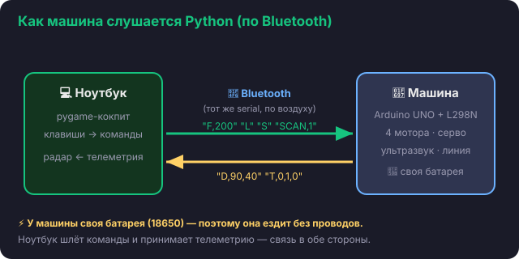

Урок 1 · сборка
Знакомство с машиной
Цель урока
Понять, из чего состоит машина и как она будет слушаться нашего кода. Разложить детали
набора и разобраться, кто за что отвечает.
🧩 Что в наборе
Набор Elegoo Smart Robot Car — это конструктор машины-робота. В нём уже есть всё главное:
- Arduino UNO — «мозг» машины (плата, которая выполняет нашу программу);
- драйвер моторов L298N — «мускулы»: даёт моторам ток и команду крутиться;
- 4 мотора с колёсами — машина едет и поворачивает;
- ультразвук HC-SR04 на серво — «глаза»: меряет расстояние до препятствий;
- датчики линии — видят чёрную линию на полу;
- Bluetooth-модуль — связь с ноутбуком без проводов;
- корпус, крепёж, провода и держатель батарей.
🔗 Как машина связана с ноутбуком
Машина не понимает Python. Поэтому связь идёт по цепочке: мы пишем код на ноутбуке,
он по Bluetooth шлёт машине короткие команды, а UNO выполняет их моторами.

💡 Чем машина отличается от руки-робота
У руки MeArm питание шло по USB-проводу, и она стояла на месте. У машины — своя
батарея, поэтому провод не нужен и она ездит свободно. Связь — по Bluetooth. Это и есть
главная фишка курса: рулим настоящей машиной с клавиатуры, а она катается по комнате.
🔍 Разложим детали
Открой набор и разложи по группам: моторы и колёса, платы (UNO, L298N),
датчики (ультразвук, линия), Bluetooth, батарейный отсек и крепёж.
Сверься с инструкцией Elegoo, какие детали к какой части.
⚠️ Про аккумуляторы 18650
Машина питается от двух аккумуляторов 18650. Их часто нужно докупить и зарядить
(обязательно со взрослым). Ставят их строго по полярности +/− — перепутаешь, плата
может сгореть.
✅ Чек перед следующим уроком
Все детали на месте, есть отвёртка, заряжены батареи. Понятно, кто «мозг», кто «мускулы»,
кто «глаза»? Тогда собираем машину.